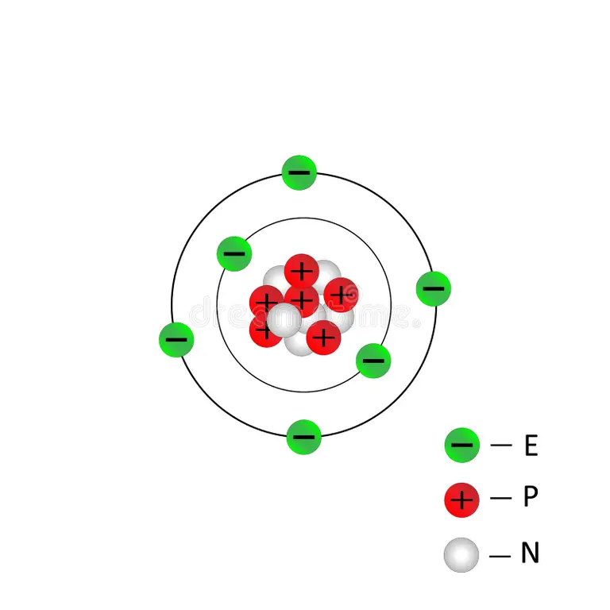

Atomic Physics Basics
Structure of the Atom
All matter consists of molecules, and molecules consist of atoms. An atom is the smallest unit of a chemical element that retains its chemical properties.
According to Rutherford's model, an atom consists of a positively charged nucleus surrounded by electrons. The electrons move around the nucleus and occupy discrete energy levels.

Figure 1. Structure of the atom according to Rutherford's model.
The Atomic Nucleus
The nucleus contains positively charged protons and electrically neutral neutrons. Together, protons and neutrons are called nucleons.
Protons and neutrons are composed of quarks. A proton consists of two up quarks and one down quark (uud), while a neutron consists of one up quark and two down quarks (udd).

Figure 2. Quark composition of protons and neutrons.
Limitations of Rutherford's Model
According to classical electrodynamics, an electron moving around the nucleus should lose energy by electromagnetic radiation and eventually fall into the nucleus. However, atoms are stable.
Rutherford's model also could not explain atomic spectra. Experiments showed that atoms emit radiation only at specific wavelengths, producing line spectra.
Bohr's Model
Bohr proposed that electrons can occupy only specific allowed energy levels. While an electron remains in one of these states, it does not emit radiation.
Radiation is emitted or absorbed when an electron moves between energy levels. The energy of the photon corresponds to the difference between these energy levels.

Figure 3. Discrete electron energy levels according to Bohr's model.